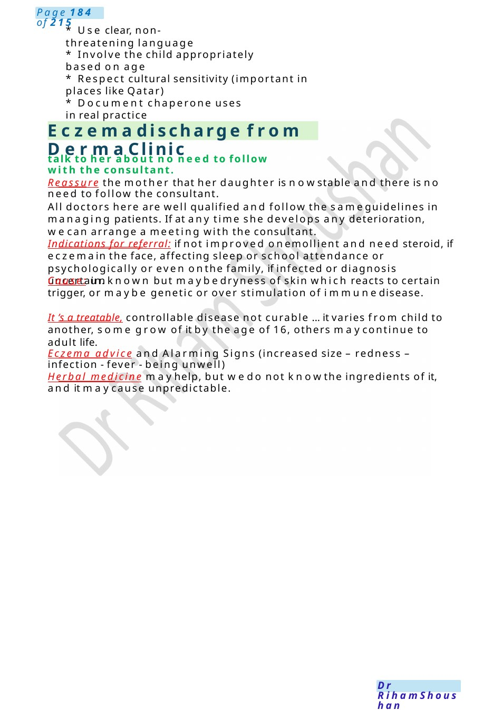

Eczema discharge from Derma Clinic
* Respect cultural sensitivity (important in places like Qatar) talk to her about no need to follow with the consultant.
Scenario Summary
* Respect cultural sensitivity (important in places like Qatar) talk to her about no need to follow with the consultant.
Full Original Scenario

Eczemadischarge from Derma Clinic
- Use clear, non-threatening language
- Involve the child appropriately based on age
- Respect cultural sensitivity (important in places like Qatar)
- Document chaperone uses in real practice
talk to her about no need to follow with the consultant.
Reassure the mother that her daughter is nowstable and there is no need to follow the consultant.
All doctors here are well qualified and follow the sameguidelines in managing patients. If at any time she develops any deterioration, wecan arrange a meeting with the consultant.
Indications for referral: if not improved onemollient and need steroid, if eczemain the face, affecting sleep or school attendance or psychologically or even onthe family, if infected or diagnosis uncertain.
Cause: unknown but maybedryness of skin which reacts to certain trigger, or maybe genetic or over stimulation of immunedisease.
It ’s a treatable, controllable disease not curable ... it varies from child to another, some grow of it by the age of 16, others maycontinue to adult life.
Eczema advice and Alarming Signs (increased size – redness – infection - fever - being unwell)
Herbal medicine mayhelp, but wedo not knowthe ingredients of it, and it maycause unpredictable.

Eczema Counselling
Examscenario:
1. Explain management of Atopic eczema to parents. Mother refuses steroid cream.
2. Anxious momhas 9 months old baby with eczema. Had one admission for eczema herpeticum. Eczema still flares. Worried about mxeczema and concern about probiotic, breast-feeding only for 2 months, disturbed sleep, on hydrocortisone prn and emollients mum concern regarding steroid, formula milk, poor knowledge.
Explanation: Eczema is a condition that causes the skin to be generally dry. It may also become itchy, red, and cracked. In manycases the child or other family members mayalso have asthma, hay fever or other allergies.
What are the main ways to control eczema? Avoiding triggers (something that can worsen the condition) like certain types of food, clothes or soap, nail care (cutting nails &weargloves at night to prevent self-somatizations) Frequent use of moisturizers (emollients). If all of this fail, we can Use of topical steroids (steroid creams or ointments) for flared areas.
She refuses steroids because of its side effects. The amount of the steroid is very minimal, only 1%, even this amount is absorbed &we will monitor her blood sugar &her blood pressure.
Formula milk: if you noticed that it is related to the milk, we can arrange a meeting with the skin doctor &feeding specialist, they can order for him a test to check if he has allergies to milk& if so, wecan give him less allergic formula.
Other medications: wecan add medicine to relieve the itching &improve his sleep (antihistamines). Bandages or wet wraps: Dryor medicated bandages can be soothing and maybe required to help stop the itching and help treat a severe flare up. The skin doctor or nurse will advise you if these are needed.